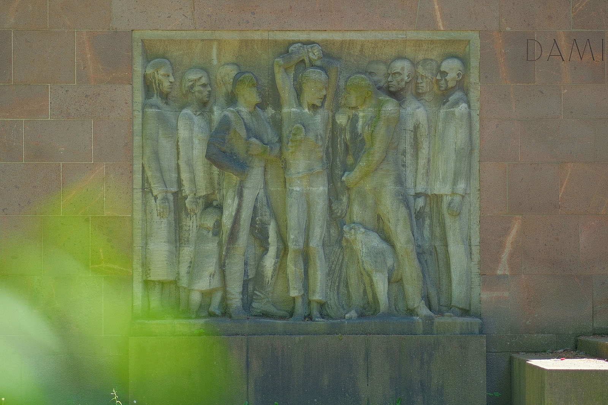
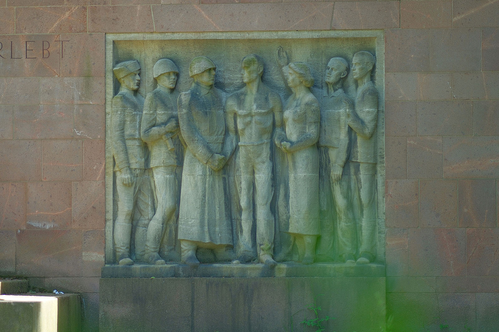
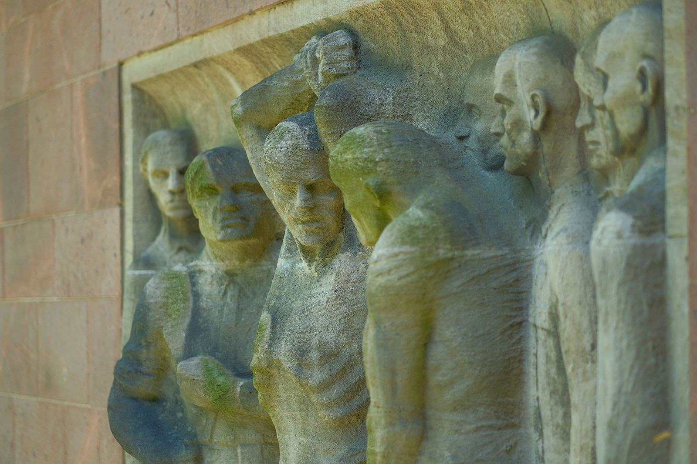
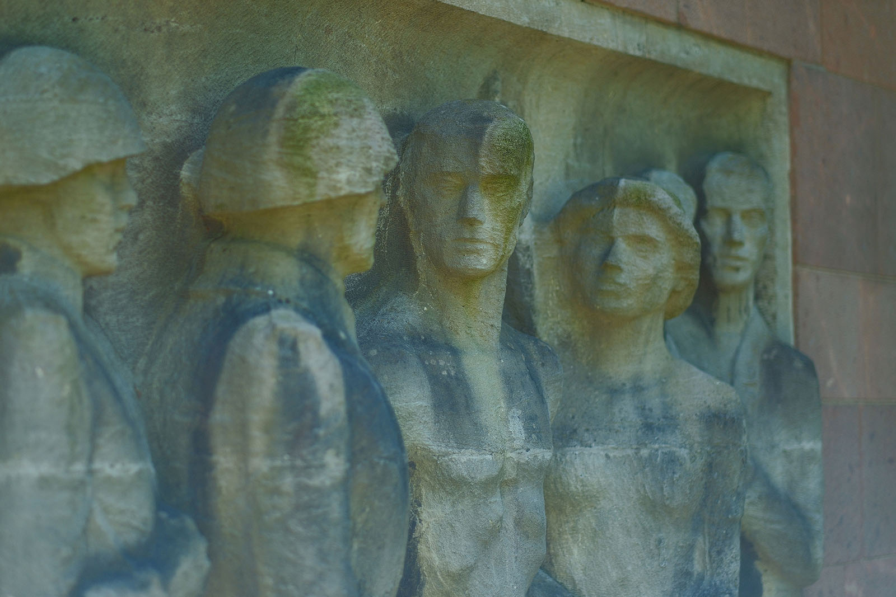
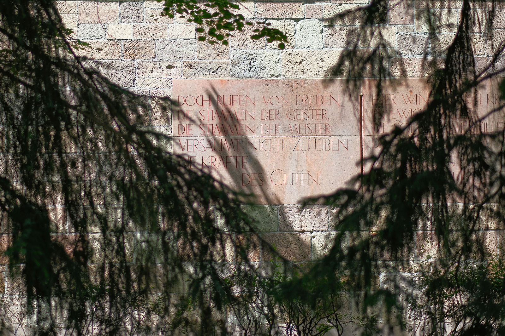
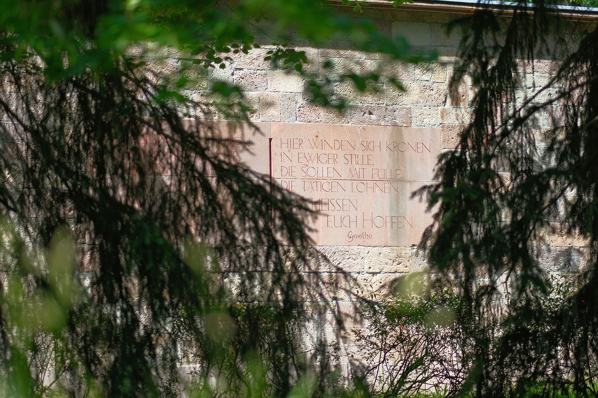
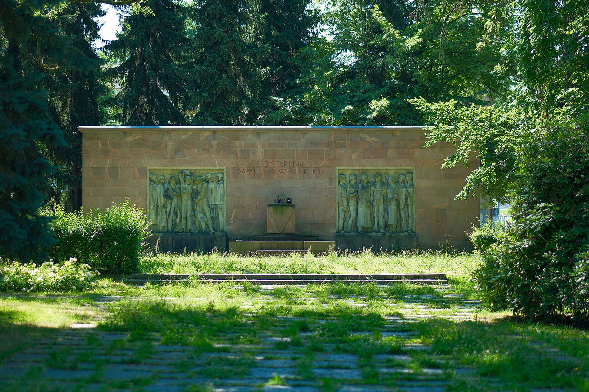

Recherche und Werkbeschreibung: Roman Pilz. Fotografien: Frank Krüger. Text und Bild wechseln sich wie in einem Magazin ab. Ein Klick auf ein Bild öffnet die Großansicht.
Hanns Diettrich wurde in der unmittelbaren Nachkriegszeit zu einem der wichtigsten Gestalter von Mahnmalen für die Folgen der verbrecherischen Herrschaft des Nationalsozialismus. Aus eigenem Engagement für den Antifaschismus schuf der im südlich von Chemnitz gelegenen Jahnsdorf geborene Bildhauer zahlreiche der wichtigsten Gedenkstellen für die Verbrechen der Nazis in Chemnitz und Umgebung.
Bereits 1947 gestaltete Diettrich auf dem ab 1946 in Reichenhain angelegten Ehrenfriedhof für die sowjetischen Kriegsopfer und späteren Garnisonsfriedhof das Mahnmal für die gefallenen Soldaten der Roten Armee. Unter dem Obelisken mit dem roten Stern, Hammer und Sichel stehen zwei Soldaten neben der Inschrift: "Ewige Trauer den Helden, die im Kampf für die Freiheit und Unabhängigkeit unseres Vaterlandes gefallen sind."
Das 1952 eingeweihte Mahnmal für die Opfer des Faschismus im heute nach diesem benannten Park ist bis heute einer der wohl wichtigsten Orte der Chemnitzer Erinnerungskultur – es illustriert zugleich auf anschauliche Weise deren Wandel im Laufe der Zeiten. Nach der Befreiung aus den Konzentrationslagern organisierten sich die Überlebenden bereits im Sommer 1945 in zunächst regionalen Komitees und Ausschüssen, um sowohl an die Toten zu erinnern als auch die Opfer zu unterstützen und die Täter anzuklagen. Der erste OdF-Tag findet mit um die 100.000 Teilnehmern in Berlin am 9.

September 1945 statt. Die zentrale Veranstaltung im nach Werner Seelenbinde umbenannten Neuköllner Stadion gibt bereits wesentliche Elemente vor, die für das spätere Gedenken als Motiv dienten: Auf dem von Hans Scharoun entworfenen provisorischen Ehrenmal steht das Motto „Die Toten mahnen die Lebenden“ und zwischen den Fahnen der Länder, aus denen die Opfer stammen, steht das Emblem, das die politischen Häftlinge in den KZs auf der Brust tragen mussten: der rote Winkel. Im Anschluss an diesen Gedenktag etabliert sich der 2. Sonntag des Monats September als OdF-Tag.
Ab 1947 organisiert die Vereinigung der Verfolgten des Naziregimes (VVN) an vielen Orten in Deutschland den Gedenktag. Der ursprünglich gesamtdeutsche und überpolitische Verband entsteht in allen Besatzungszonen aus bereits bestehenden Regionalverbänden, oft mit Mitgliedern der ursprünglichen OdF-Ausschüsse. Auch in Chemnitz organisiert sich von 1952 bis Februar 1953 kurz ein Regionalverband und Verfolgte des Naziregimes organisierten bereits vor dem Bau des heutigen Denkmals auf dem ehemaligen Friedhofsareal das Gedenken an anderen Orten der Stadt.

Doch bereits im März 1953 wird der Verband in der DDR zugunsten einer mehr von der SED gelenkten Erinnerungskultur aufgelöst und anderen Organisationen übertragen. In der DDR wurde in der Folge der kommunistische Widerstand stärker in den Vordergrund gestellt und zum Leitmotiv antifaschistischer Propaganda, wobei jüdische und andere Verfolgte zugleich zurückgedrängt wurden. Auch in Westdeutschland wurden im Zuge des Kalten Krieges der einheitliche Konsens und die VVN im Zuge des Antikommunismus zunehmend isoliert und sogar zum Ziel politischer Verbotsverfahren. In Westdeutschland ersetzte in Folge dieser Entwicklung in den 1950er Jahren auch der Volkstrauertag am zweiten Sonntag vor dem ersten Adventssonntag den OdF-Tag im September.
Auch in Chemnitz ist der zentrale Gedenktag nach der Wende nicht mehr im Spätsommer, sondern der 27. Januar, der Tag des Gedenkens an die Opfer des Nationalsozialismus in Deutschland. Dieser Gedenktag wurde 1996 in Erinnerung an den Tag der Befreiung des Vernichtungslagers Auschwitz bundesweit eingeführt. Doch das Denkmal selbst ist über die Jahre fast unverändert geblieben. Es formuliert in leicht abgewandelter Variante den Mahnruf des ersten Gedenkens: "Sie starben - damit ihre weiterlebt"!

Die aus regionalem Porphyrtuff gearbeitete Gedenkstätte wurde nahe des Chemnitzer Schauspielhauses, das wegen der Kriegszerstörung seines ursprünglichen Hauses im Zentrum 1949 seine (eigentlich provisorische) neue Spielstätte auf dem ehemaligen Johannisfriedhof gefunden hatte, errichtet. Am Ende eines langen Weges, der vom Platz mit dem Marx-Engels-Denkmal bis zum Mahnmal führt, wurde das Bauwerk am siebten Gedenktag für die Opfer des Faschismus, am 14.
September 1952, eingeweiht. Damals hieß der Park noch Karl-Marx-Platz, doch Mitte der 1970er Jahre wird das gesamte Areal zu Ehren der Toten in „Park der Opfer des Faschismus“ umbenannt, obwohl hier als wirkliche Grabstätten und letzte Reste des ehemaligen städtischen Friedhofs nur die Ruhestätten gefallener Soldaten des Deutsch-Französischen Krieges von 1871 und besondere Ehrengräber verbleiben.

Vor der Mauer mit Hanns Diettrichs Figuren und dem Gedenkspruch steht auf einem Unterbau ein Quader mit dem dreieckigen VVN-Symbol – dort werden zu Gedenkveranstaltungen Kränze abgelegt. Links und rechts des Steins sind in die gemauerte Wand zwei lebensgroße Hochreliefs von Diettrich eingefügt. In Kalkstein ist links eine lebensgroße Darstellung der abgehärmten und malträtierten Gefangenen mit ihren brutalen Peinigern zu sehen. Rechts stehen die Überlebenden gestärkt zusammen mit ihren Befreiern, den sowjetischen Soldaten.
Auf der Rückseite der Mauer steht ein Zitat aus einem Gedicht von Goethe, das um 1815 entstand und den Titel "Symbolum" trägt. Der Dichter ruft hier die Kräfte des Guten an, die durch die Tat lebender und toter Vorbilder zu Hoffnung stimmen.

Dittrich setzte nahe der heutigen Wolgograder Allee 1958 auch den sieben in den letzten Kriegstagen von der SS in Hutholz bei Neukirchen ermordeten Widerstandskämpfern, die in der Bombennacht am 5. März 1945 aus dem Gefängnis auf dem Kaßberg geflohen waren, einen Gedenkstein ein. Später gestaltete er auch das VVN-Ehrenmal am ehemaligen KZ Sachsenburg (1968) sowie ebenfalls in den 1960er Jahren das Mahnmal für die Opfer des Bombenangriffs 1945 auf dem Städtischen Friedhof von Chemnitz.

Mahnmal für die Opfer des Faschismus (1953) von Hanns Diettrich
„Sie starben damit ihr weiterlebt“ – steht in großen Buchstaben ohne Punkt und Komma über dem auf der Spitze stehenden roten Dreieck – während der nationalsozialistischen Terrorherrschaft das Symbol für politische Häftlinge, kommunistische und sozialdemokratische Gegner des Regimes, in den Konzentrationslagern. Nach dem Zweiten Weltkrieg nutzte die Vereinigung der Verfolgten des Naziregimes VVN das Symbol für das Gedenken an die Opfer der Nazi-Verbrechen. Links und rechts davon jeweils eine überlebensgroße, reliefartige Figurengruppe, die Opfer der Nationalsozialisten, Opfer des Faschismus, und zum Teil ihre sowjetischen Befreier darstellen.
